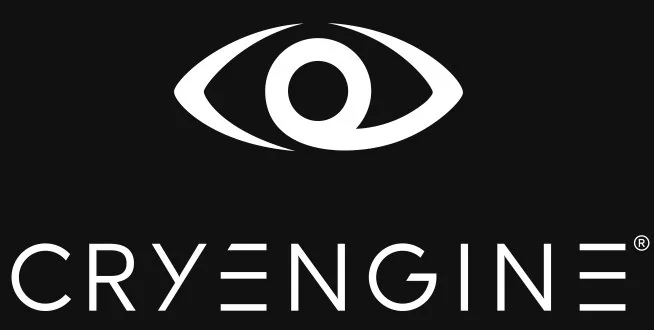
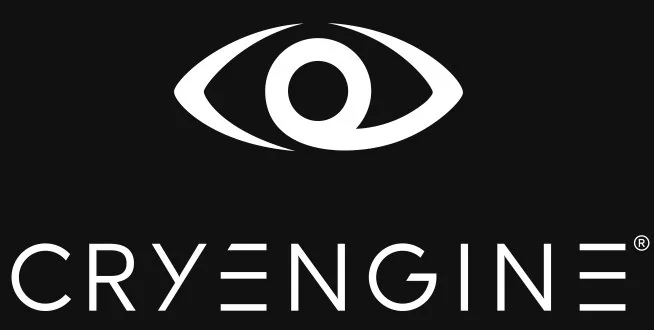

DLSS Data
Intro
The Data
NVIDIA's DLSS is an AI system that transforms low-resolution game frames into crisp, high-quality visuals in real time. But behind its impressive results is a massive dataset of game visuals, motion data, and depth information - the data backbone that teaches DLSS how to predict the perfect image.
How DLSS Works with Data
The Data Behind DLSS
Outsourced Data
DLSS is trained mainly using extensive visual data pulled directly from video games. These massive datasets consist of both low-resolution and high-resolution frames from various scenes of the video game. It is important to note that not only do these datasets contain these still frames, they also include additional necessary rendering information such as motion vectors and depth buffers.
In-House Data
To teach DLSS how to upscale images, Nvidia also preprocesses this data in-house to create 'perfect frames', or ultra-high quality versions of those same game images. These frames ultimately act as a cross-reference for the model, indicating what the generated output should theoretically look like.
How DLSS Works
"These extra pieces of information help the model understand how objects move through space and how far away they are from the viewer, allowing DLSS to make more accurate predictions."
Platform Bias
Potential Platform or Engine Bias
A potential concern that is raised from DLSS and the datasets it is trained on is platform or engine bias. According to their website, Nvidia collaborates closely with game engines like Unreal Engine and Unity for their DLSS plugin, potentially leading to a skewed and biased dataset (Nvidia DLSS). Since larger engines like Unreal and Unity may support a certain type or genre of game, DLSS's performance may be limited when it comes to games created on lesser known engines. If the model is mainly fed information from these select sources, its functionality and use cases can become hindered when dealing with video games that may not conform with the style of these larger engines.

 
